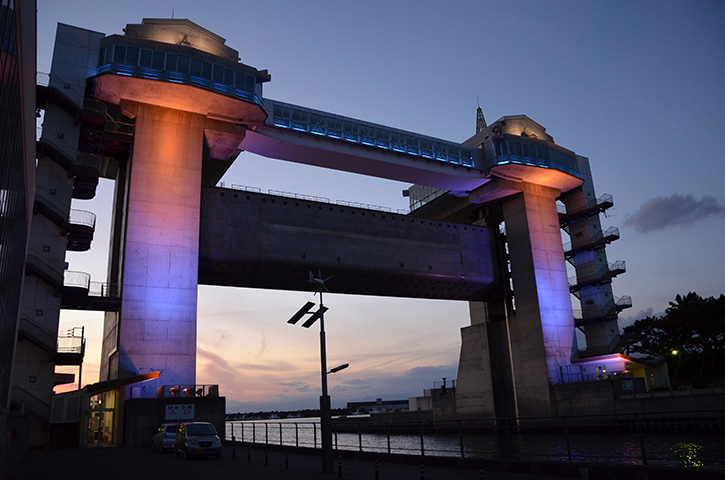

QRを読み込ませてください

沼津港大型展望水門 びゅうお

スタンプラリーQR設置スポット
開催期間: 20XX年3月24日まで
沼津港大型展望水門「びゅうお」は沼津港に高くそびえる日本最大級の水門です。
地上30mのところに展望施設が併設されており、富士山や箱根連山、沼津アルプスをはじめ、駿河湾に突き出した大瀬崎をくっきりと見ることができます。夜になるとライトアップされフォトジェニックな水門をご覧いただくことができます。
家族や友達、カップルなどたくさんの方が楽しめるスポットです。
| ジャンル | 観光 |
| 住所 | 静岡県沼津市千本1905-27 |
| 電話番号 | 055-963-3200 |
| URL | https://numazukanko.jp |
| 営業時間 | ～ |
| 駐車場 | 約30台 |
| アクセス | JR沼津駅よりバス約10分 |

開催期間: 20YY年MM月DD日~20YY年MM月DD日
遊んで・知って・発見する
スタンプラリーで沼津市を観光しましょう！！特産グルメに歴史的建造物、文化財や観光地の映えスポットなど、あなたが知らない沼津の魅力をスタンプラリーを通して発見しましょう。